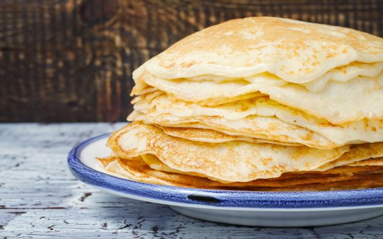

Pancake

Description
The best and easiest pancake recipe.
Ingredients
- 2 cups of wheat flour
- 3 eggs
- 2 cups of milk
- pitch of salt
Steps
- Mix all ingredients in a blender for 2 minutes.
-
Then turn it off and, with a spoon, mix the flour that stuck to
the blender glass.
- Mix again just to mix and set aside.
-
Grease the frying pan with a drizzle of oil and heat until hot.
-
Using a ladle, take a portion of the dough and place it in the
frying pan. Rotate the pan to spread the dough evenly.
-
Lower the heat and let it brown underneath, then turn it over to
the other side and let it brown, repeat the process with all the
dough.
Home